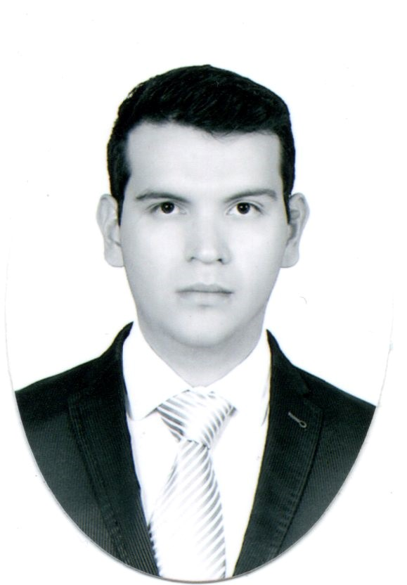

Mi nombre completo es Hugo Eduardo Ontiveros Ledezma. Nací hace 23 años en la ciudad de Tepic, Nayarit y soy el menor de dos hermanos. Estudié la licenciatura de ingeniería en biotecnología y trabajo como bioinformático, que es una combinación de biología con ciencia de datos. Actualmente vivo en la ciudad de Querétaro, en un departamento con 2 amigos y afortunadamente vivo a dos cuadras de mi novia, Fernanda. Es muy obvio, pero mi color favorito es el naranja.
